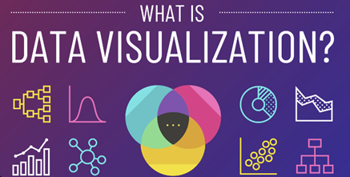
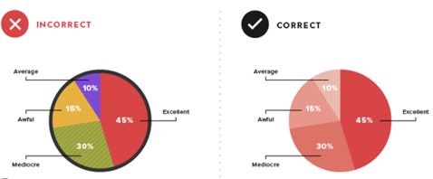
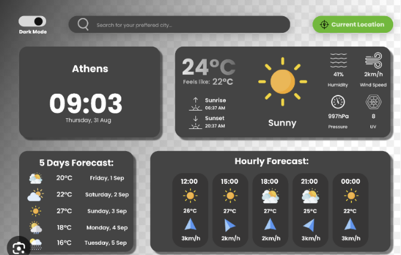

Data visualisation
Data visualisation can easily be compared to drawing up maps for your firm's data. It has to tell a story to investors and customers. Instead of keeping these raw data in tables, it converts them into graphs, tables, and other visual representations. Such visualization can assist you in identifying patterns, trends as well as other anomalies within your given data, which are critical elements of decision making. Information presented in long reports or spreadsheets can never compare with visual data that appeals more to people. This promotes internal data sharing in the company and enables organizations to provide relevant reports to workgroups, partners, and customers.
Data visualization purpose:
1. Identifying Trends: Trends or patterns in your business data, such as sales growth or consumer behaviour, can be highlighted using visualizations.
2. Comparing Data: The use of visual representation makes it easy to compare either values or performance between different categories or times.
3. Spotting Anomalies: It is also important to point out that visualization techniques are easy ways of identifying outliers or anomalies on your data that may need further investigations.
4. Decision-Making: Data visualization helps CEOs to make informed decisions. This explains why you can look at your financial data and tell where to trim down costs or investment.
Benefits of Data Visualization:
1. Clarity and Accessibility: Data visualization makes difficult information easier for people to rapidly understand by streamlining the data. This is particularly crucial in the corporate world, where quick decisions are frequently required.
2. Finding Patterns and Trends: Compared to looking at raw data, visual representations of data make it easier for users to spot patterns, trends, and outliers. For well-informed decision-making, this is essential.
3. Communication: Information pertaining to data can be expressed in a common language thanks to data visualization. It helps to close the gap that exists between non-experts and technical specialists, enabling efficient communication.
3. Communication: Information pertaining to data can be expressed in a common language thanks to data visualization. It helps to close the gap that exists between non-experts and technical specialists, enabling efficient communication.
Creating Effective Visualizations:
To create user-friendly and effective data visualizations, consider the following:
1. Know Your Audience: Make your visuals reflective of your audience. In some instances, a CEO may find it appealing to stick to simple, top level charts rather than sophisticated pictures.
2. Simplicity: Keep it simple. Do not include unnecessary clutter or excessive details that may only end up confusing more than explain in the article.
3. Use Colour Wisely: Colours must improve comprehension, not distract. Select a standard colour theme while keeping in mind colour-blind accessibility.
4. Labels and Titles: Label your “x axis”, “y axis” appropriately and give the title that summaries the overall message of your data presentation.
5. Interactivity: Visualization can have interactive features within some tools which may facilitate deeper analysis of data items.
Common pitfalls to avoid:
1. Misleading Visuals: Make sure not to create visuals that distort data or emphasize differences.
2. Overcomplication: A visualization might become confusing if there are too many elements in it. Keep it straightforward.
3. Ignoring Data Integrity: Ensure that your data is clean, valid and current to avoid errors in your visualization.
Finally, data visualisation is an effective means of converting data into actionable intelligence for CEO’s and business executives. The CEO becomes well-informed as they understand the basics of data visualization and its importance, and thereby they can communicate effectively with their team and other important stakeholders.
Impact on Decision-Making:
Information systems and business decision-making are significantly impacted by data visualization:
1. Making Informed Decisions: By providing decision-makers with a clear, evidence-based picture of the facts, data visualization lessens the possibility that they would base their choices on guesswork or insufficient information.
2. Quick Response: Making decisions quickly is crucial in a changing business climate. Decision-makers can swiftly evaluate data and adapt to changing circumstances thanks to data visualization.
3. Identifying prospects and Challenges: Data visualization facilitates the identification of growth prospects and issues that require attention. It might highlight market trends or potential areas for cost savings, for instance.
4. Increasing Accountability: Team members' accountability is increased when goals are tracked and monitored more easily with the use of visual data representations.
Example of Data visualization
Weather Forecast Dashboard :
• Real-time weather forecasting dashboard provides current temperatures, precipitation levels, wind speeds, among other meteorological parameters. This information is presented in different charts and visualizations.
• Interactive Visualization: You could navigate different forecasts available on various weather websites such as weather.com or Weather Channel through their interactive weather dashboards.